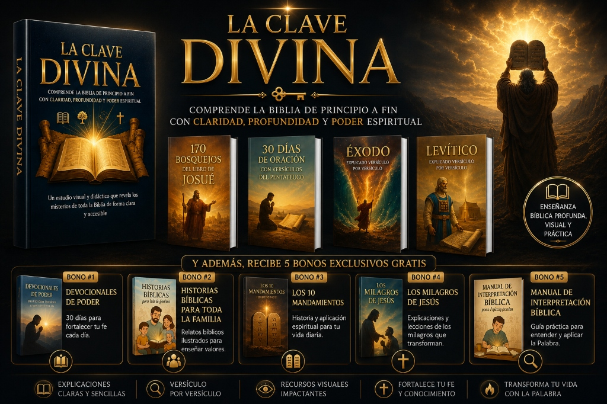
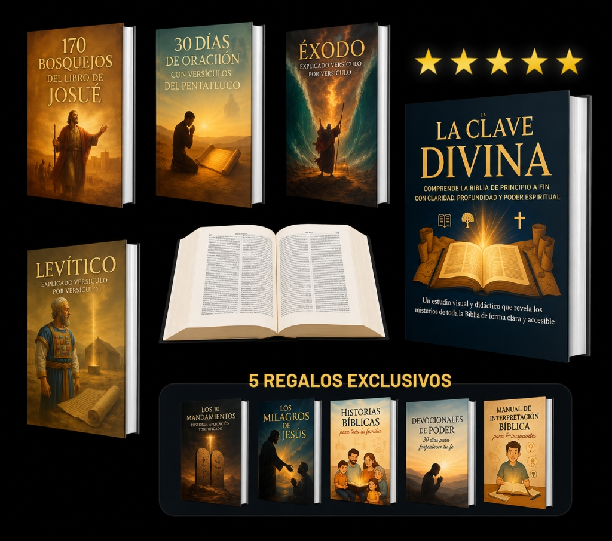
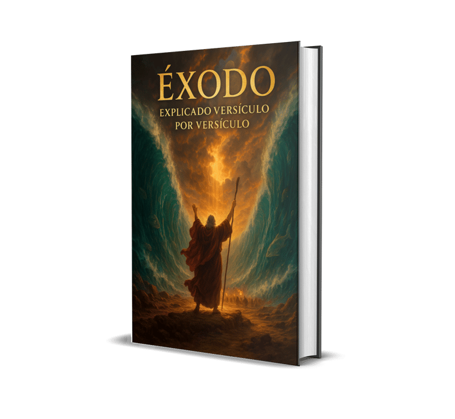
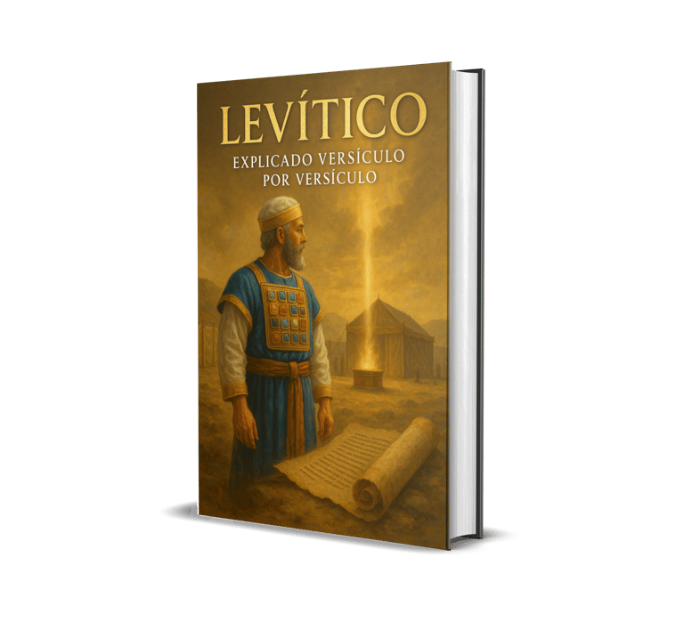
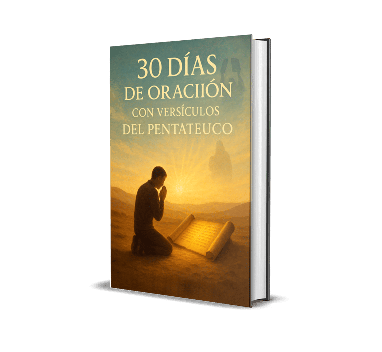
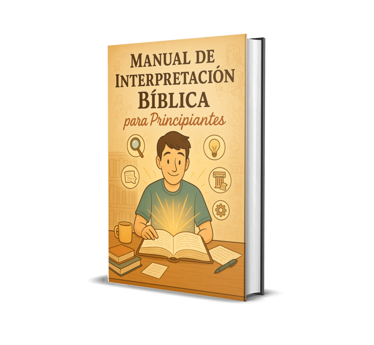

Un sistema visual completo que te guía por cada libro, capítulo y versículo — para que nunca más cierres la Biblia sintiéndote perdido.

Lees la Biblia, terminas el capítulo… y no sabes qué acabas de leer.
Te sientes avergonzado de no entender lo que otros parecen comprender fácilmente.
Quieres poder enseñar en tu célula o iglesia, pero no sabes por dónde empezar.
Deseas compartir la Palabra con tu familia, pero no encuentras las palabras correctas.
Has intentado estudiar la Biblia antes, pero siempre terminas abandonando.
Quieres crecer espiritualmente, pero necesitas un camino claro y ordenado.
Si te identificaste con al menos una de estas situaciones,
lo que vas a leer a continuación fue creado exactamente para ti.
La mayoría de los creyentes leen la Biblia como si fuera un libro cualquiera: de principio a fin, solo o en silencio, sin contexto histórico, sin estructura visual, sin una guía que les ayude a conectar cada parte con el todo. El resultado siempre es el mismo:
Abres el Levítico y sientes que estás leyendo un reglamento antiguo que no tiene nada que ver con tu vida.
Lees los Salmos con emoción, pero cuando alguien te pregunta qué significan, no puedes explicarlo.
El Apocalipsis te parece tan complejo y aterrador que prefieres no leerlo.
Comienzas planes de lectura bíblica en enero y en febrero ya los abandonaste — sin saber por qué.
Alguien en la iglesia cita un versículo y tú asientes, aunque en el fondo no tienes idea del contexto.
Nada cambia. Dentro de un año, estarás exactamente donde estás hoy: leyendo las mismas palabras, sintiendo la misma frustración, mirando a otros enseñar mientras tú permaneces en silencio.
El conocimiento bíblico que no se entiende hoy, es fe que no crece mañana.
Pero todo eso puede cambiar hoy. Y es más simple de lo que imaginas.
Mostrarme la solución ↓
No es un libro de teología. No es un comentario bíblico complejo. Es un sistema visual, didáctico y progresivo que te lleva de la mano a través de la Biblia entera — con claridad, profundidad y aplicación real.
Todo lo que necesitas para pasar de lector confundido a estudiante seguro que puede enseñar a otros.
📱 Recorre la plataforma en formato móvil y comprueba la organización del área de miembros
Resúmenes temáticos con enseñanzas, aplicaciones y oraciones que te guían por todo el libro de Josué de forma clara y visual. El estudio bíblico más completo del libro.

Comprensión clara y edificante del libro que revela cómo Dios libera, guía y establece pacto con su pueblo. Cada versículo explicado en lenguaje accesible y aplicable a tu vida hoy.

Finalmente entenderás el propósito de las leyes y ofrendas del Levítico — y por qué cada una apunta proféticamente a Cristo. Aplicado a la vida moderna del creyente.

Una guía devocional que transforma tu vida de oración en 30 días, basada en los cinco primeros libros de la Biblia. Con reflexión diaria, versículo clave y oración guiada.
Entiende la narrativa bíblica completa de Génesis a Apocalipsis, con contexto histórico, teológico y espiritual en cada libro.
Lleva estudios a tu célula, grupo familiar o iglesia con confianza. El material ya está organizado para que tú solo lo presentes.
Aprende a leer la Biblia correctamente, evitar errores de interpretación comunes y aplicar la Palabra con responsabilidad.
Los bosquejos visuales fijan las enseñanzas en tu memoria de forma natural, sin esfuerzo de memorización mecánica.
Enseña la Palabra a tus hijos y cónyuge de forma visual, memorable y llena de vida. Las historias bíblicas cobran sentido para todos.
Cultiva una relación más profunda con Dios a través del conocimiento sólido de su Palabra. Fe con raíces no se mueve con el viento.
Material listo para preparar clases, prédicas y discipulados con profundidad y claridad. Ahorra horas de preparación cada semana.
Una puerta de entrada perfecta al estudio bíblico. Lenguaje claro, estructura visual y progresión natural que no abruma.
Enseña a tus hijos la Biblia de forma visual y memorable. Crea devocionarios familiares que todos esperan con alegría.
Transforma tus grupos pequeños con contenido estructurado que genera conversación, reflexión y crecimiento espiritual real.
Cada bono fue diseñado para complementar y profundizar tu estudio bíblico. Son materiales independientes, con valor real — y hoy los recibes gratis.
Descubre el origen profundo y cómo cada mandamiento aplica en tu vida moderna. Una guía reveladora para vivir según la voluntad de Dios — no por obligación, sino por amor.
Explora cada milagro del Señor: sanidades, prodigios y señales que siguen transformando vidas. Con contexto bíblico, reflexión y lección espiritual para cada uno.
Las historias más poderosas del Antiguo y Nuevo Testamento en formato visual y resumido. Ideal para enseñar a niños y adultos. Perfecto para devocionales en el hogar.
Reflexiones diarias con versículos clave y oraciones para fortalecer tu conexión con Dios. Treinta días que pueden transformar completamente tu vida espiritual.

Aprende a interpretar correctamente los textos bíblicos, evitar errores comunes de hermenéutica y aplicar la Palabra con precisión. El recurso que pastores usan en sus estudios.
Pastores, madres, líderes y nuevos creyentes de toda América Latina compartiendo su experiencia real.
"Llevaba años intentando estudiar la Biblia de forma consistente y siempre fallaba. Con La Clave Divina pude entender el libro de Josué como nunca antes. Ahora lo enseño en mi célula cada semana. Increíble material."
"Como pastor, buscaba materiales para preparar mis estudios bíblicos de forma más visual y eficiente. La Clave Divina me ahorra horas de preparación cada semana. Mis feligreses notan la diferencia en cada prédica."
"Soy nueva creyente y la Biblia me parecía imposible de entender. Este material me dio el mapa que necesitaba. Por primera vez en mi vida, leo la Biblia y entiendo lo que Dios me quiere decir. Bendición total."
"Lo compré sin esperar mucho y lo que recibí valía 10 veces más. Los bosquejos visuales de Josué son extraordinarios. Mi esposa y yo los estudiamos juntos cada domingo. Dios bendiga a quienes hicieron esto."
"El Manual de Interpretación Bíblica (bono) solo ya valía el precio completo. Ahora mis predicaciones tienen una base más sólida y mis hermanos en la iglesia me preguntan cómo preparo tan bien mis estudios."
"Uso las Historias Bíblicas para toda la Familia con mis tres hijos. Es increíble ver cómo ellos entienden y recuerdan la Palabra de Dios. Vale cada centavo y mucho más. Material de corazón."
Valor total de los materiales: $70+ USD
Precio de acceso completo · Pago único · Sin mensualidades · Acceso de por vida
Si por cualquier razón — cualquiera — el material que recibes no supera tus expectativas,
escríbenos dentro de los primeros 7 días y te devolvemos cada centavo de tu inversión.
Sin preguntas. Sin formularios complicados. Sin burocracia.
Nuestro compromiso es con tu transformación espiritual, no con retener tu dinero.
Si no te sirve, no nos mereces como estudiante — y con gusto te reembolsamos todo.
Miles de creyentes en América Latina ya dieron este paso. Con garantía de 7 días, el único riesgo es no intentarlo.
Quiero La Clave Divina — Acceder Ahora →✝ "La entrada de tus palabras alumbra; hace entender a los simples." — Salmos 119:130